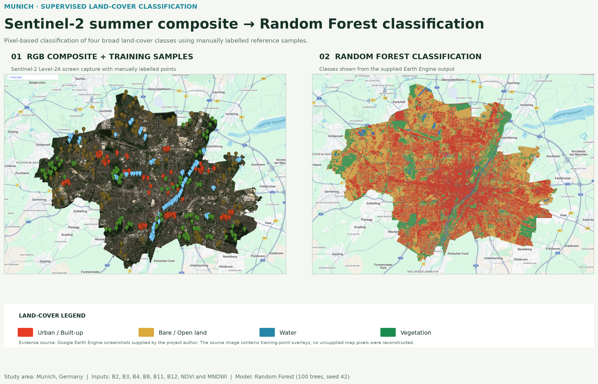
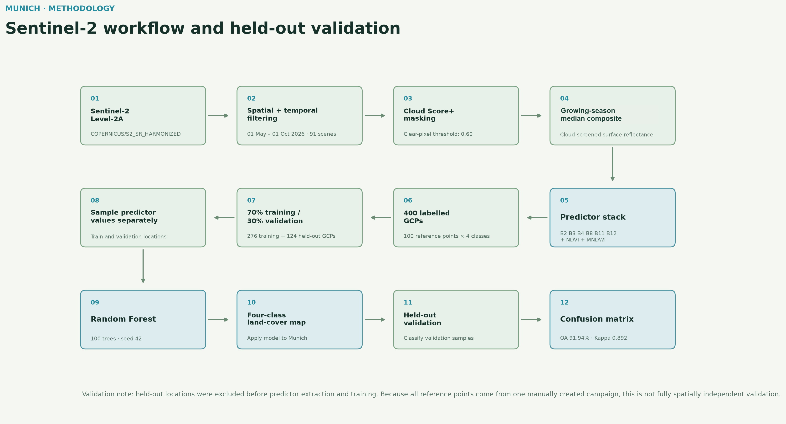
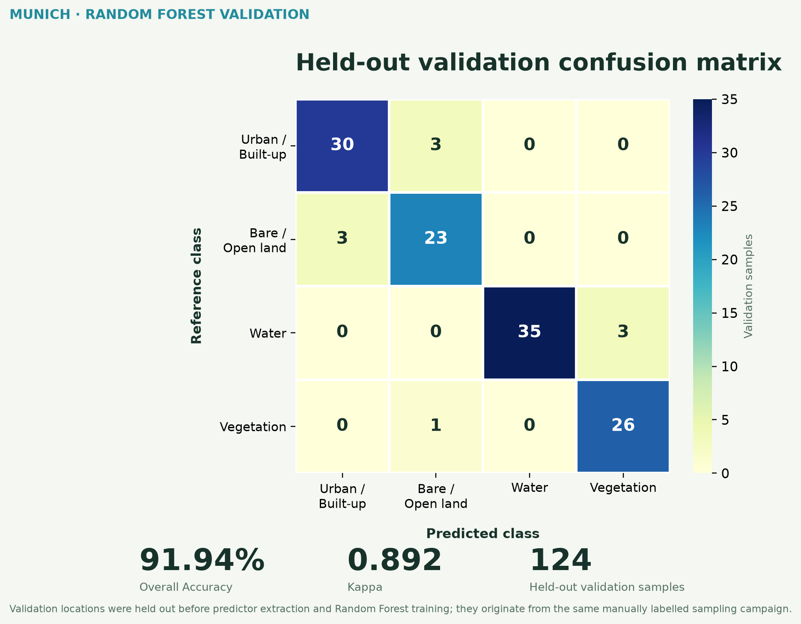
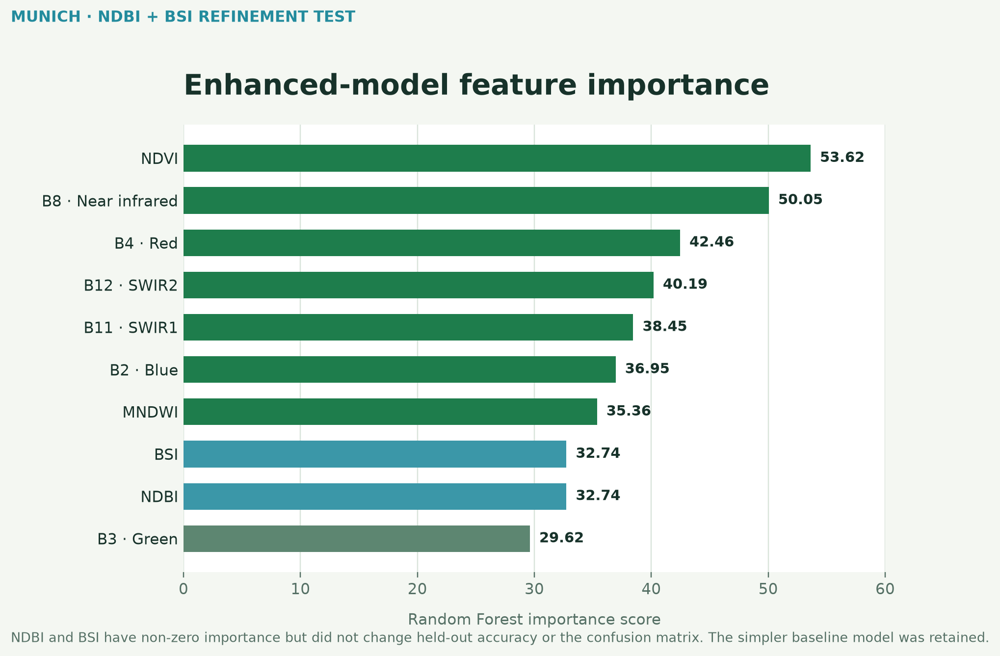

Ziel
Das Projekt erprobt einen transparenten Workflow zur Klassifikation von vier breiten Landbedeckungsklassen in München: Siedlung / versiegelte Fläche, offenes Land, Wasser und Vegetation. Ziel ist ein prägnanter, reproduzierbarer Fernerkundungsworkflow und kein autoritativer produktiver Landbedeckungsdatensatz.
Daten. COPERNICUS/S2_SR_HARMONIZED Level-2A Oberflächenreflexion von Mai–September 2026 (91 Szenen vor der Kompositbildung), mit Google Cloud Score+ und einem Clear-Pixel-Schwellenwert von 0,60 wolkenbereinigt und als Median-Komposit der Vegetationsperiode aggregiert. Der Prädiktor-Stack nutzt B2, B3, B4, B8, B11, B12, NDVI und MNDWI.
Echtfarbenkomposit und Klassifikation
Der Vergleich zeigt die bereitgestellten Earth-Engine-Ausgaben mit einer portfoliotauglichen Legende. Die linke Quelle enthält die Trainingspunkte; fehlende Bildinhalte wurden nicht künstlich rekonstruiert.


Methode
Die vier Landbedeckungsklassen wurden jeweils durch 100 manuell gelabelte Referenzpunkte vertreten. Die 400 Referenzpunkte wurden vor der Extraktion der Sentinel-2-Prädiktorwerte zufällig in 276 Trainings- und 124 Validierungsstandorte geteilt. Ein Random Forest mit 100 Bäumen und Seed 42 wurde ausschließlich mit den extrahierten Trainingsstandorten trainiert.


Genauigkeitsbewertung


| Klasse | Producer Accuracy | User Accuracy |
|---|---|---|
| Siedlung / versiegelt | 90,9% | 90,9% |
| Offenes Land | 88,5% | 85,2% |
| Wasser | 92,1% | 100,0% |
| Vegetation | 96,3% | 89,7% |
Modellverfeinerung
Um die Verwechslung zwischen Siedlung und offenem Land zu verringern, wurden NDBI und BSI als zusätzliche Prädiktoren getestet. Beide erhielten eine messbare Random-Forest-Importance, änderten jedoch weder die Holdout-Genauigkeit noch die Konfusionsmatrix. Daher wurde das einfachere Basismodell beibehalten.
| Merkmal | Basis | Erweitert |
|---|---|---|
| Prädiktoren | 8 | 10 |
| Gesamtgenauigkeit | 91,94% | 91,94% |
| Kappa | 0,892 | 0,892 |
| Zusätzliche Indizes | — | NDBI, BSI |
| Out-of-bag-Fehler | — | 10,1% |
| Endauswahl | Beibehalten ✓ | Nicht beibehalten |


Interpretation
Die stärkste wechselseitige Verwechslung besteht zwischen Siedlung und offenem Land. Drei Siedlungs-Referenzpunkte wurden als offenes Land vorhergesagt, während drei Referenzpunkte für offenes Land als Siedlung vorhergesagt wurden. Wasser und Vegetation sind besser getrennt, obwohl drei Wasser-Validierungspunkte als Vegetation klassifiziert wurden. Vegetation erreicht mit etwa 96,3% die höchste Producer Accuracy, während Wasser in der zurückgehaltenen Validierungsstichprobe 100% User Accuracy erreicht. Feinkörniges Salz-und-Pfeffer-Rauschen bleibt sichtbar, da es sich um eine pixelbasierte Klassifikation ohne nachgelagerte Glättung handelt.
Einordnung und Werkzeuge
Die berichtete Genauigkeit basiert auf einer zufälligen Holdout-Aufteilung der ursprünglichen manuell gelabelten Referenzpunkte. Die Validierungsstichproben wurden vor Prädiktorextraktion und Modelltraining ausgeschlossen. Da Trainings- und Validierungsstandorte jedoch aus derselben manuell erstellten Stichprobenkampagne stammen und räumlich nahe liegen können, ist das Ergebnis keine vollständig räumlich unabhängige Genauigkeitsbewertung. Für eine produktive Anwendung wären geografisch unabhängige Validierungsdaten oder externe Referenzbilder erforderlich.
Google Earth Engine · Sentinel-2 Level-2A · Cloud Score+ · Random Forest · JavaScript · Python · Matplotlib